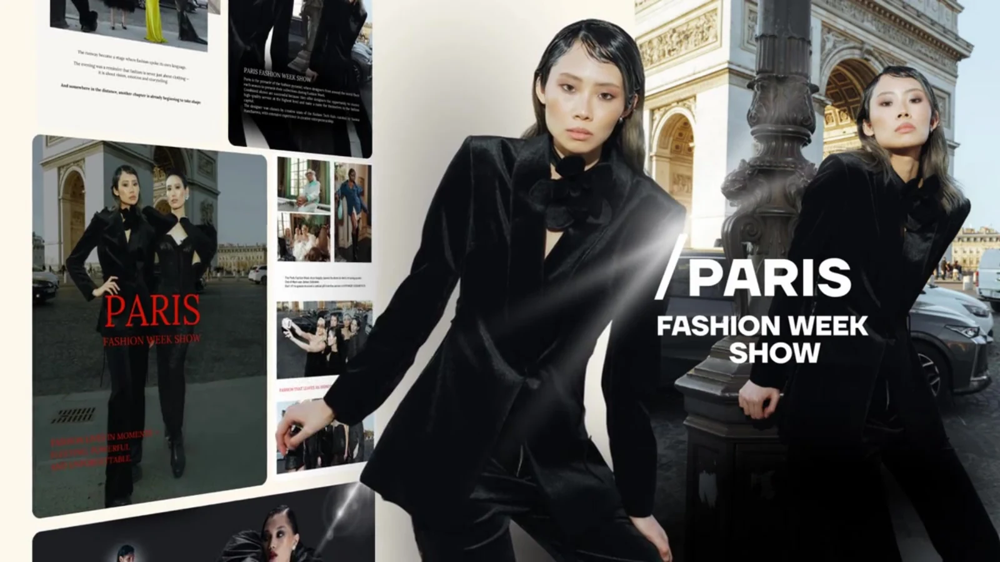
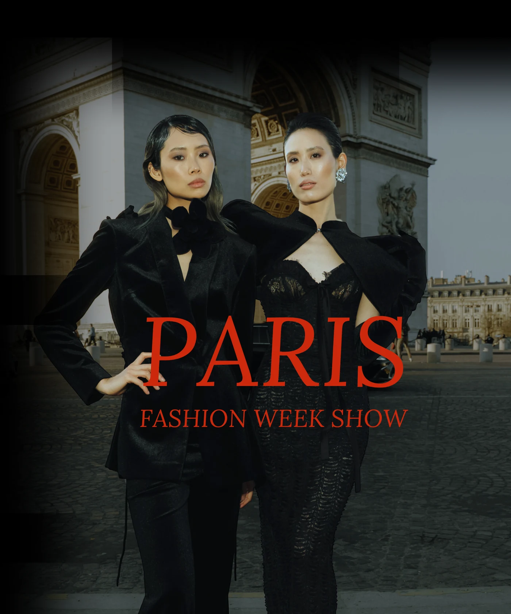
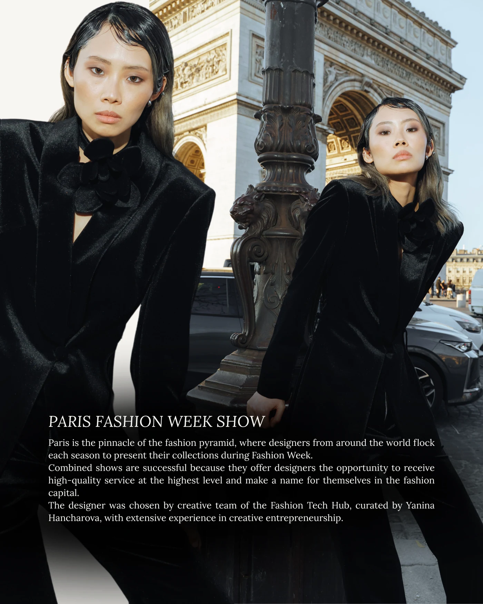
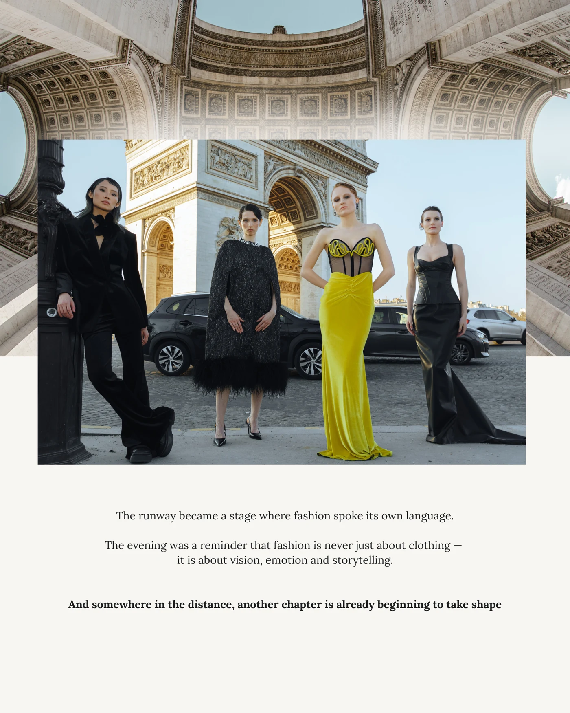
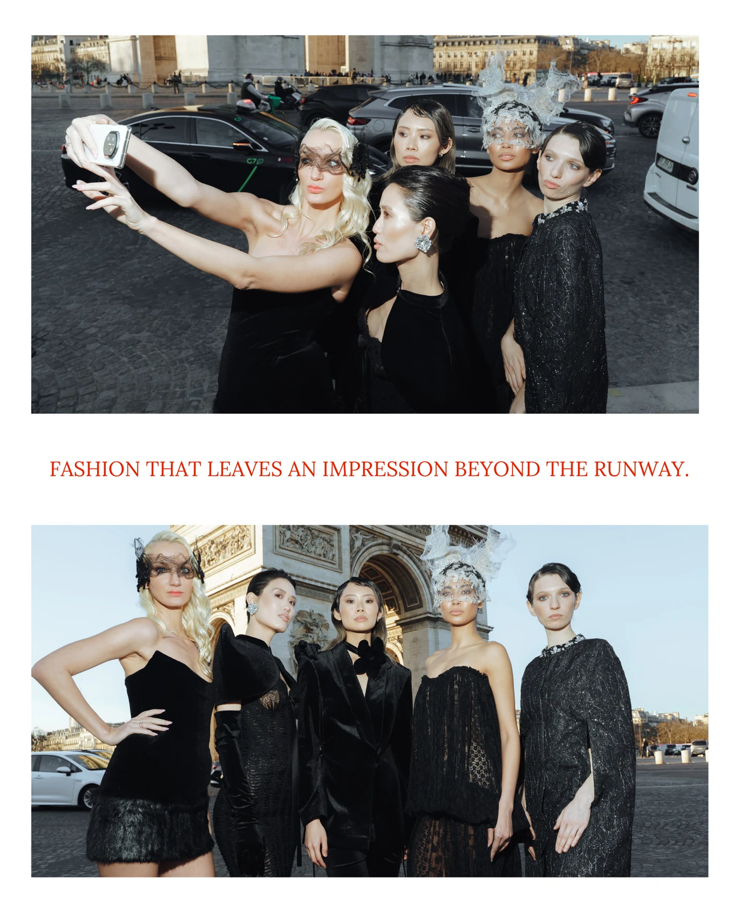
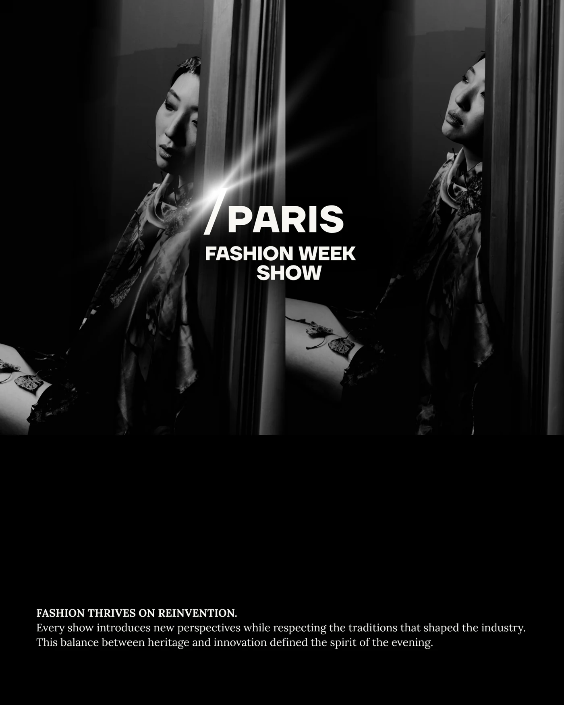
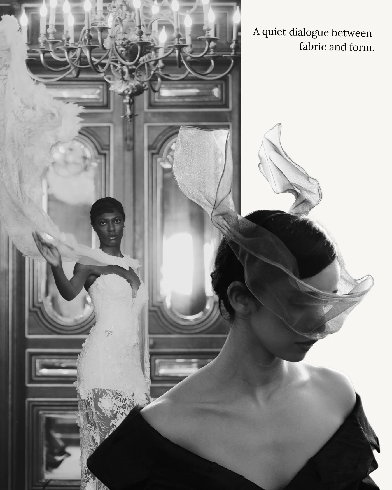

Paris Fashion
Week Show.
Визуальный образ fashion-события: атмосфера Парижа, контрастная типографика и серия материалов для digital-коммуникации.


Атмосфера показа.
За пределами подиума.
Для Paris Fashion Week Show разработана серия визуальных материалов: обложки, анонсы и публикации для соцсетей. В центре — образы участников, парижская архитектура и характер fashion-события.
Материалы объединяют чёрно-белые и цветные фотографии, выразительная типографика и сдержанные светлые поля. Разные композиции складываются в одну визуальную историю.
Одна история.
Разные ракурсы.
Анонс и серия публикаций. Каждую работу можно открыть в полном размере.












Визуальная связь
между публикациями.
Ключевой образ
Образы участников и парижский контекст задают характер анонса и продолжаются в материалах для соцсетей.
Ритм серии
Крупные фотографии чередуются с композициями из нескольких кадров. Светлые поля создают паузы и удерживают текст.
Узнаваемые акценты
Контраст чёрного и белого, фирменный знак и красная типографика связывают разные форматы в одну серию.